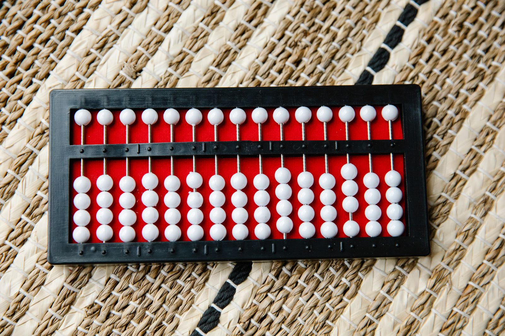

Sıfır: Hiçliğe Bir İsim Vermek Neden Bu Kadar Zor Oldu?
Elinde bir sayı var, diyelim ki 207. Ortadaki o küçük yuvarlak olmasa bu sayı yirmi yedi mi, iki yüz yedi mi, iki bin yedi mi olduğunu söyleyemezsin. Hiçliği gösteren bir işaret, yani sıfır, bugün hesap makinesinden bankacılığa her şeyin temelinde duruyor. Ama insanlığın bu işareti bulması, ona bir isim vermesi ve nihayet bir sayı olarak kabul etmesi binlerce yıl sürdü. Bugünkü okuma, sıfırın hem rakam hem kelime olarak yolculuğu.

Bu yazıyı kelime kökeni ve rakam tarihi olarak iki parça hâlinde anlatıyorum. İkisi sonunda aynı yere çıkıyor: bugün “zero” ve “cipher” diye iki ayrı İngilizce kelime, aslında aynı Sanskritçe kelimenin iki farklı yoldan Avrupa’ya gelmiş hâli.
207 sayısında sıfır ne iş yapıyor?
Bu bölüm benim genel bilgim, yazının kaynaklarından birine dayanmıyor. Bugün kullandığımız sistemde bir rakamın değeri, bulunduğu yere göre değişiyor. 207 sayısında 2 yüzlük basamağında, 7 birlik basamağında duruyor ve aradaki onluk basamağı boş. Sıfır tam olarak bu boşluğu işaretliyor. Onu çıkarırsan 27 elde edersin, bu bambaşka bir sayı.
Roma rakamlarında böyle bir sorun yok, çünkü her harf yerinden bağımsız bir değer taşıyor. 207, CCVII olarak yazılıyor ve içinde “boş onluk basamağı” diye bir şey yok. Bu sistem toplamak için yeterince iyi, ama büyük sayılarla çarpma ve bölme yapmak çok zor. Discover’ın yazısı da Roma rakamlarının kayıt tutmaya yettiğini, hesap yapmaya yetmediğini söylüyor. Konumsal sistemin gücü, hesabın kâğıt üzerinde basamak basamak yapılabilmesinden geliyor ve bu sistem sıfır olmadan çalışmıyor.
Boşluk bırakmak ile sıfıra sahip olmak aynı şey değil
Sıfırı anlatırken ilk karışıklık şuradan çıkıyor: “hiçlik” fikri ile “hiçliği temsil eden bir işaret” ile “sayı olarak sıfır” üç ayrı adım. Eski uygarlıkların çoğu ilk adımı atmıştı, ikincisine bazıları ulaştı, üçüncüsü ise çok daha geç geldi.
Discover dergisinin anlattığına göre Sümerlerin hiçlik fikrini kavrayan ilk topluluk olduğu düşünülüyor, ama sıfır için bir sembolleri yoktu. Yaklaşık 4.000 yıl önce Babilliler konumsal bir yazım sistemi kullanıyordu: bir sütun boşsa o sütunu boş bırakıyorlardı. Bin yıldan fazla sonra, Selevkos İmparatorluğu döneminde, boşluğun yerine kama biçimli işaretler koymaya başladılar. Yine de bu işaret bir sayı sayılmıyordu. Aynı kaynak bir tabletten söz ediyor: orada “20 - 20” işleminin sonucu boş bırakılmış.
Maya uygarlığı sıfırı bağımsız olarak geliştirdi. Avrasya ile temasları yoktu. Tarihlerde kullandıkları sıfır, örneğin 13.0.0.0.0 gibi yazımlarda görünüyor, bu da kaynağa göre M.Ö. 3114’e denk geliyor. En yaygın simgeleri bir deniz kabuğuydu ve “hiçbir şey” anlamına da geliyordu.
Yunanlılar sıfırı büyük olasılıkla M.Ö. 331’de Büyük İskender’in Babil’i fethinden sonra tanıdı. Ptolemaios trigonometride, çoğu zaman üstünde bir çizgi bulunan içi boş bir daire kullandı. Matematik tarihçisi Robert Kaplan’a göre Yunanlılar bu işareti bir sayıdan çok noktalama işareti gibi görüyordu. Bu yorum Discover’ın aktarımından geliyor.
Kayın kabuğuna iliştirilmiş bir nokta
Hindistan hikâyesinin en ilginç parçası Bakhshali elyazması. 1881’de, bugün Pakistan sınırları içinde kalan Bakhshali köyünde bir tarlada gömülü bulunmuş. Elyazması 70 kırılgan kayın ağacı kabuğu yaprağından oluşuyor ve 1902’den beri Oxford Üniversitesi’nin Bodleian Kütüphaneleri’nde duruyor.
Uzun süre bu eserin tarihi belirsizdi. Matematik tarihçisi Hayashi Takao 8. ile 12. yüzyıl arasında bir tarih önermişti. Oxford’un duyurusuna göre radyokarbon testleri ise farklı bir sonuç verdi: elyazması üçüncü ya da dördüncü yüzyıla uzanıyor ve kayıtlı en eski sıfır kullanımını içeriyor. Bu, o zamana kadar bilinen tarihten yaklaşık 500 yıl daha eski. Bir önceki rekor, Gwalior’daki bir tapınakta bulunan 9. yüzyıl yazıtıydı. Yaprakların en az üç ayrı dönemden malzemeden yapıldığı da ortaya çıktı, tarihleme zorluğunun nedeni bu.
Bu elyazmasındaki sıfır basit bir nokta. Görevi, onlukları, yüzlükleri, binlikleri belirten basamakların boş kaldığını göstermek, yani bir yer tutucu. Oxford’un anlatımına göre bu nokta zamanla başlı başına bir sayıya dönüştü. Oxford’dan Marcus du Sautoy bu gelişmeyi “matematik tarihinin en büyük atılımlarından biri” diye niteliyor.
Dawn gazetesinin aktardığına göre metin “yüzlerce sıfır” içeriyor. Kesin sayıyı vermiyor. National Geographic ise çevirilerin elyazmasının İpek Yolu tüccarlarının aritmetik alıştırması için kullanılmış olabileceğini düşündürdüğünü yazıyor. Sıfır burada bir hesap aracı olarak ortaya çıkıyor. Bu yorum tek kaynakta geçiyor, kesin bir bilgi gibi okuma.
Du Sautoy bu noktanın, sıfırın başlı başına bir sayı olduğu fikrinin filizlendiği tohum olabileceğini söylüyor. Her uzman aynı fikirde değil. ZerOrigIndia projesinden Peter Gobets, elyazmasının sıfırın icadına yol açtığından emin olmadığını, ama bunun mümkün olduğunu söylüyor. Gobets’in cümlesi iddianın zayıf noktasını özetliyor: “En büyük düşmanımız, çok az kanıt bulunması.” National Geographic’in makalesi, radyokarbon tarihlemesinin bağımsız olarak doğrulanıp doğrulanmadığını da belirtmiyor. Dawn’da da hata payı yer almıyor.
Sıfırın doğum yeri tartışmalı
Hikâyenin buraya kadarı düz bir çizgi gibi duruyor, ama Scientific American’da yayımlanan bir yazı tabloyu karıştırıyor. Yazara göre sıfırın kökeni hâlâ tartışmalı ve ipuçları Andlar’dan Mezopotamya’ya, Tang Hanedanı Çin’inden Hindistan ve Kamboçya’ya kadar uzanıyor.
Gwalior yazıtı, 876 tarihli. Bir tapınaktaki arazi ölçüsünü gösteren yazıtta “0” geçiyor. Eugen Hultzsch yazıtı 1883’te kopyalayıp çevirmişti ve uzun süre bilinen en eski sıfır olarak kabul edildi.
Sonra Güneydoğu Asya devreye giriyor. 1891’de bir Fransız ekibi Kamboçya’da Sambor yakınlarında bir taş stel buldu. Taştaki tarih Khmer takvimine göre 605. yıl, yani makaleye göre M.S. 685. Georges Cœdès 1931’de ortadaki işaretin bir sıfır olduğu sonucuna vardı. Taş sonradan kayboldu, Amir Aczel de onu yeniden bulup 2015’te Finding Zero kitabında anlattı. Sumatra’da, Srivijaya bölgesinde ise Hollandalı sömürge görevlileri üç tarihli taş bulmuştu: Keduan Bukit, Talang Tuwo ve Kota Kapur. Saka takvimine göre 605, 606 ve 608 yıllarını taşıyan bu yazıtlar yazara göre M.S. 683, 684 ve 686’ya karşılık geliyor. Makalenin yazarları Malaya Üniversitesi’nden ve Sumatra taşlarını sıfırın en erken kaydı sayıyor. Aynı yazı, Aczel’in “ilk sıfır” iddiasının acele olabileceğini de not ediyor.
Ben bu tartışmada taraf seçmiyorum. İşin özü şu: sıfırın tek bir doğum günü yok. Farklı yerlerde, farklı biçimlerde ortaya çıkmış ve birbirine bağlanmış bir fikir.
Üç basamaklı bir merdiven
Tartışmaların çoğu, “sıfır” sözcüğüyle neyi kastettiğimize bağlı. Bu yüzden hikâyeyi üç basamaklı bir merdiven gibi düşünmek işe yarıyor. Kaynaklardaki örnekleri bu üç basamağa yerleştirdim. Yerleştirme benim düzenlemem, kaynakların kendi sınıflaması değil.
- 1. basamak: hiçlik fikriSümerler, kaynağa göre hiçlik kavramını kavrayan ilk topluluk olabilir. Bir sembolleri yok.
- 2. basamak: boşluğu gösteren işaretBabil’in kama işareti, Maya’nın kabuğu, Ptolemaios’un içi boş dairesi, Bakhshali’nin noktası. İşaret var, ama hesapta sayı olarak kullanılmıyor.
- 3. basamak: sayı olarak sıfırBrahmagupta’nın 628 tarihli kuralları. Sıfırla toplama, çıkarma, çarpma yapılıyor ve sıfıra bölme bile deneniyor.
İkinci basamaktaki işaretlerin tarihleri tartışma konusu değil, çünkü dönem ve yer belli. Tartışma, hangi işaretin üçüncü basamağa geçtiği konusunda çıkıyor. Sumatra taşları, Sambor stelleri, Bakhshali noktası aynı basamakta mı duruyor, yoksa biri ötekinden mi ileri? Tek bir yazıtın içindeki yuvarlak işareti, onu yazanın ne düşündüğünü bilmeden tam olarak yorumlayamıyoruz. Gobets’in “çok az kanıt” sözü de bu yüzden önemli.
Brahmagupta: sıfırı bir sayı gibi kullanmak
Sıfırı yer tutucudan çıkarıp sayı hâline getiren adımın ilk güçlü kanıtı Brahmagupta’nın 628 tarihli Brahmasphutasiddhanta eseri. MacTutor biyografisine göre Brahmagupta bu kitabı Bhillamala’da, bugünkü Bhinmal’de, Gurjara hanedanının başkentinde yazmış, sonra Ujjain gözlemevinin başına geçmiş.
Brahmagupta sıfırı “bir sayıdan kendisini çıkarmanın sonucu” diye tanımlıyor. Bir sayıya sıfır eklemek ya da ondan sıfır çıkarmak sayıyı değiştirmiyor, sıfırla çarpmak ise sıfır veriyor. Kitap bunu borç ve servet diliyle anlatıyor:
- Borç - sıfırSonuç yine bir borçtur.
- Sıfır - sıfırSonuç sıfırdır.
- Sıfır × borç ya da servetSonuç sıfırdır.
- İki borcun çarpımı ya da bölümüSonuç bir servettir.
Bunlar bugünkü aritmetikle uyumlu. Sıra sıfıra bölmeye gelince Brahmagupta’nın kuralları daha az iyi çıkıyor. MacTutor, bir sayının sıfıra bölümünün “paydası sıfır olan bir kesir” olduğu iddiasının çok az şey söylediğini yazıyor. “Sıfırın sıfıra bölümü sıfırdır” iddiası ise kesin biçimde yanlış. Yine de aynı biyografi bunu “negatif sayılara ve sıfıra aritmetiği genişletme yolunda parlak bir girişim” olarak değerlendiriyor.
Bir kelimenin iki yolu: “zero” ve “cipher”
Şimdi kelimeye bakalım. St Andrews Üniversitesi’nin matematik sözcükleri sözlüğüne göre İngilizce “zero”, Smith ve Karpinski’nin 1911 tarihli çalışmasına dayanarak Sanskritçe “sunya” (boşluk) kelimesinden geliyor. Bu kelime Arapçaya “as-sifr” ya da “sifr” olarak aktarılmış. Buradan sonrası iki kola ayrılıyor.
Renkler yalnızca ayrım içindir
İlk kol Fibonacci’den geçiyor. Pisalı Leonardo, 1202 tarihli Liber Abaci kitabında Arapça kelimeyi Latinceye “zephirum” olarak almış: “quod arabice zephirum appelatur”, yani “Arapçada zephirum denilen”. İtalyanca bazı eserlerde “zeuro” ve “zepiro” biçimleri görülüyor. “Zero” 14. yüzyıl el yazmalarından bazılarında beliriyor. Basılı en eski kullanım, Filippo Calandri’nin 1491’de Floransa’da yayımlanan De arithmetrica opusculum eserinde. Fransızcada “zéro” 1515’e kadar ortaya çıkmış. İngilizce için OED’nin en eski örneği 1604’te Edward Grimstone’un José de Acosta çevirisinde: bir halkın haftalarını on üç günle saydığını ve günleri “bir zero ya da cipher” ile işaretlediğini yazıyor.
İkinci kol Ortaçağ Latincesinde “cifra”, Eski Fransızcada “cyfre” olarak ilerliyor ve İngilizcede “cipher” oluyor. OED’nin en eski örneği 1399 tarihli Richard the Redeles şiirinde. Burada kelimenin anlamı değişmeye başlıyor. 1528’den itibaren “gizli yazı”, 1579’dan itibaren de “hiç kimse, değersiz kişi” anlamlarında kullanılıyor. Sayı olarak “cipher” 19. yüzyılın sonunda hâlâ yaşıyor, 1882’de bir aritmetik kitabı rakamın “cipher ya da zero” diye de anıldığını söylüyor. Bugün ise “cipher” yalnızca şifre anlamında. “Hiçlik” kelimesi önce bir sayıya, sonra bir sırra dönüşmüş.
Türkçedeki “sıfır” da bu ailenin Arapça koluna ait. Bu bilgiyi kendi arka plan bilgimle yazıyorum, bu yazı için ayrıca bir Türkçe etimoloji kaynağı bulamadım. Arapça “ṣifr” sözcüğü bugün de “boş” anlamını taşıyor. Türkçede kullandığımız kelime, Sanskritçe “boşluk” fikrinin neredeyse çevirisini hâlâ içinde taşıyor. “Rakam” kelimesinin Arapça kökeni ve “algoritma” kelimesinin dokuzuncu yüzyılda yaşamış Harezmî’nin adından gelmesi de benim arka plan bilgim. Ayrıca doğrulamadım.
Avrupa neden direndi?
Sıfır ve Hint-Arap rakamları Avrupa’ya gelince hemen kabul görmedi. Discover’a göre Roma rakamları 13. yüzyıla kadar ortaçağ Avrupa’sında standarttı. Kayıt tutmaya yetiyordu ama hesaplamada zayıftı ve bu, ticareti, bilimi sınırlıyordu. 12. yüzyılda Hint-Arap sistemi Akdeniz limanlarında yaygındı. Arap yerleşimciler sistemi İspanya’ya getirmişti ve bazı İtalyan âlimler bilimsel çalışmalarında kullanıyordu.
1202’de Pisalı Leonardo, yani Fibonacci, Liber Abaci kitabını yayımladı. Kitap okurlarına abaküsü bırakıp yeni sistemi kullanmalarını öğütlüyor ve nasıl yapılacağını gösteriyordu. Fibonacci çocukken Cezayir’de bu sistemle tanışmıştı. İsviçre Ulusal Müzesi’nin yazısına göre Fibonacci 1170 civarında doğmuş, 1240 civarında ölmüş, Toskana kökenli, babası Guglielmo Bonacci bir noterdi.
Kitap yine de bir anda dünyayı değiştirmedi. Discover’a göre yıllarca çoğunlukla âlimler tarafından okundu. İnsanlar alışkanlıklarını değiştirmekte yavaştı, çünkü Roma sistemi günlük işler için yeterince iyi çalışıyordu. Keith Devlin, The Man of Numbers kitabında Fibonacci’nin etkisini kişisel bilgisayar öncülerinin etkisine benzetiyor: yaptığı iş onlarınki kadar devrimciydi.
Direnç sert olabiliyordu. İsviçre Ulusal Müzesi’nin yazısına göre 1299’da Floransa, sözleşmelerde ve resmî belgelerde Arap rakamlarının kullanımını yasakladı. Gerekçe olarak rakamların sahtecilikte daha kolay değiştirilebilmesi ve tüccar defterlerinin zor okunması gösteriliyor. Aynı kaynak, Kilise’nin bu sembolleri Araplara ait “şeytani” işaretler olarak gördüğünü ve bazı şehirlerin onları yasakladığını söylüyor. Bu son iddiayı başka bir kaynakta doğrulayamadım, o yüzden müzenin sözü olarak aktarıyorum. Sıfırın kendisi de özellikle zorlandı: aynı yazıya göre İtalyanlar “aslında sayı olmayan” ama bir değeri on kat artırabilen bir şeyi kabul etmekte isteksizdi. Negatif sayılar da şüpheyle karşılanıyordu.
Sahtecilik gerekçesi akla yatkın: bir sayının sonuna eklenen küçük bir “0” değeri on katına çıkarabilir. Bu yorum yazının kaynaklarında geçmiyor, benim çıkarımım.
Rakamlara neden “Arap rakamları” deniyor?
Hint-Arap sistemi adındaki “Arap” kısmı, hikâyenin Avrupa’dan görünen yüzünü yansıtıyor. Discover’ın yazısına göre sistem Hindistan’da en geç altıncı yüzyılda, belki daha önce geliştirilmişti. Sıfırı da içeren on rakamlık, konumsal bir düzendi. Avrupa’ya ise Akdeniz limanları üzerinden ulaştı. Arap yerleşimciler onu İspanya’ya getirmişti, Fibonacci de onu Kuzey Afrika’da bir çocukken öğrenmişti. Avrupalılar sistemi bu yolla tanıdığı için adı “Arap rakamları” olarak kaldı. Bu yüzden sıfırın kelimesi de Arapça “sifr” üzerinden Avrupa dillerine geçti.
Zincirin her halkası bir katkı ekledi. Hindistan’da bir nokta, sonra bir sayı oldu. Arap dünyası onu hesap sistemine yerleştirdi ve adını taşıdı. Fibonacci onu Latin dünyasına tanıttı. Floransa gibi şehirler bir süre direndi. Sonunda ticaretin ihtiyacı kazandı: kaynaklara göre tüccarlar aritmetik üstünlük yüzünden sistemi benimsedi ve sistem İtalya’dan kuzeye ticaret yollarıyla yayıldı. İsviçre’ye 15. yüzyılda ulaştı.
“Şûnya”nın felsefi yükü
Bu bölüm benim genel bilgim, kaynaklardan biri değil. Sanskritçe “şûnya”, matematik terimi olmadan önce “boşluk” anlamına gelen sıradan bir kelimeydi. Hint felsefesinde boşluk fikri de ayrıca tartışılan bir konuydu. Matematiksel sıfırın bu felsefi geleneğin içinden çıkıp çıkmadığı ise bu yazıda dayandığım kaynakların cevaplamadığı bir soru. Bu ilişkiyi kanıtlanmış gibi sunmuyorum, yalnızca kelimenin ilk anlamının “boşluk” olduğunu, bunun da Arapça “sifr”e, oradan “zero” ve “cipher”e taşındığını söylüyorum.
Sıfıra bölmek neden yasak?
Brahmagupta’nın hatalı kuralını gördükten sonra bugünkü durumu merak edebilirsin. Matematikte bir sayıyı sıfıra bölmek tanımsız. Bu kısa açıklama benim genel matematik bilgim, bu yazının kaynaklarından birine dayanmıyor. Mantığı şu: 6 bölü 2, “2 ile çarpınca 6 eden sayı” sorusudur ve cevabı 3’tür. 6 bölü 0 için “0 ile çarpınca 6 eden sayı” aramak gerekir, ama hiçbir sayının sıfırla çarpımı 6 etmez. 0 bölü 0 sorusunda ise tam tersi sorun var: her sayı cevap olabilir. Brahmagupta’nın “sıfır bölü sıfır sıfırdır” demesi bu yüzden hatalı sayılıyor, ama o kuralı yazmaya cesaret etmesi, sıfırı sayı olarak ciddiye aldığını gösteriyor.
Sıfırı sayı yapmak ne değiştirdi?
Bu bölüm de benim genel bilgim. Yer tutucu bir sıfır, yalnızca bir sayıyı doğru yazmana yarıyor. Sayı olarak sıfır ise hesap yapmanı sağlıyor: 5 eksi 5 sıfır eder, bir borç bitince hesap sıfırlanır, bir ölçek “sıfırdan” başlayabilir. Brahmagupta’nın borç ve servet dilinde konuşması bu yüzden önemliydi. Sıfır, iki yön arasındaki dengeyi gösteren bir nokta oluyor ve negatif sayılar fikri de onun yanında kolaylaşıyor.
Günlük dilimizde de bu iz var. “Sıfır kilometre” bir aracın hiç kullanılmadığını, “sıfır noktası” bir ölçümün ya da bir olayın başlangıcını, “sıfır tolerans” ise hiçbir pay bırakmamayı anlatıyor. Üçünde de sıfır, bir eksiklik olmaktan çok başlangıç ya da sınır çizgisi olarak çalışıyor.
Bilgisayarlar da sıfırı kullanıyor: ikili sistem yalnızca 0 ve 1’den oluşuyor. Burada sıfır, “kapalı” durumu gösteriyor. Bunu da genel bilgi olarak ekliyorum.
Zaman çizelgesi
- ~4.000 yıl önceBabilliler boş sütunu boş bırakıyor
- M.Ö. 331Büyük İskender Babil’i fethediyor, Yunanlar sıfırı tanıyor (Discover)
- 3.-4. yyBakhshali elyazmasında yer tutucu nokta (Oxford)
- 628Brahmagupta sıfırı sayı olarak işliyor
- 683-686Sumatra ve Kamboçya taşlarında sıfır tartışması
- 876Gwalior yazıtında “0” (Hultzsch, 1883’te okudu)
- 1202Fibonacci Liber Abaci’yi yayımlıyor, “zephirum”
- 1299Floransa Arap rakamlarını sözleşmelerde yasaklıyor
- 1399İngilizcede “cipher” kelimesinin en eski örneği
- 1491“Zero”nun basılı en eski örneği (Calandri)
- 1604İngilizcede “zero” kelimesinin en eski örneği (OED)
Bugün için üç not
- 1Bir fikir, ona bir işaret bulunmasıyla başlar. Sayı olması ise çok daha sonra gelir.
- 2Yeni bir sistemi kabul etmek, onu icat etmekten uzun sürebilir. Fibonacci 1202’de yazdı, Floransa 1299’da yasakladı.
- 3Bir kelime yolculuğunda anlamını değiştirebilir. “Hiçlik”, önce bir sayı, sonra bir sır oldu.
Kaynaklar çelişiyor
- En eski sıfırOxford’a göre Bakhshali elyazması (3.-4. yy) kayıtlı en eski kullanım. Scientific American’daki yazı ise Sumatra taşlarını (683-686) savunuyor, Aczel Kamboçya’yı. Sıfırın hangi işaretinin “gerçek sıfır” sayıldığı da tanıma bağlı: yer tutucu mu, sayı mı.
- Sambor tarihiScientific American 685 veriyor, Sumatra taşları için 683-686. Aczel’in iddiası “aceleci olabilir” diye not edilmiş.
- Bakhshali tarihiHayashi 8.-12. yüzyıl demişti, radyokarbon 3.-4. yüzyılı gösterdi. Yapraklar en az üç ayrı dönemden, bu nedenle tarihleme belirsizliği sürüyor.
- Fibonacci’nin yolculuğuİsviçre Ulusal Müzesi Cezayir diyor. Discover “Orta Doğu ve Afrika” diyor.
- Direncin nedeniFloransa’nın yasağı için sahtecilik riski ve okunmazlık gösteriliyor. Kilise’nin “şeytani” gördüğü iddiasını tek kaynakta buldum.
- Yunanlılar ve sıfırDiscover, Ptolemaios’un içi boş daire kullandığını söylüyor. Kaplan’a göre bu bir noktalama işaretiydi. Başka bir yorum bulamadım, tartışmalı kalıyor.
Başlıca kaynaklar: Oxford Üniversitesi, Bakhshali elyazması duyurusu; Scientific American, “The Elusive Origin of Zero”; Discover, “How We Discovered the Number Zero”; Discover, “How Medieval Europe Finally Ditched Roman Numerals”; MacTutor, Brahmagupta biyografisi; St Andrews, Earliest Known Uses of Some of the Words of Mathematics (Z); İsviçre Ulusal Müzesi, Fibonacci yazısı. Fotoğraf: Eren Li / Pexels (Pexels lisansı).
Veri notu: Tarihler ve alıntılar yukarıdaki kaynaklardan aktarılmıştır. Sumatra ve Sambor taşlarının sıfır olarak yorumlanması tartışmalıdır. Türkçe “sıfır” kelimesinin Arapça kökeni, “rakam” ve “algoritma” kelimelerinin kökeni, sıfıra bölmenin neden tanımsız olduğu ve abaküs fotoğrafı üzerindeki “sıfır işaretine gerek duymayan alet” yorumu benim arka plan bilgim ve yorumumdur, doğrulanmamıştır. Zaman çizelgesindeki grafik konumları yıllara orantılıdır. Bu yazı bilgi amaçlıdır.